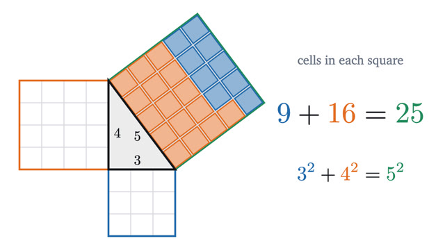

Geometry
Proofs you can see: triangles, circles, similarity, area and volume.
Start with lesson 1-
1
Why the angles of a triangle add to 180°Tear the corners off any triangle and they line up along a straight edge. A single parallel line explains why, and a sphere shows the line is needed.

-
2
The Pythagorean theorem: a proof you can seeWhy the squares on the two short sides of a right triangle add up to the square on the long side, proved by moving four triangles inside a box.

-
3
Why the area of a circle is πr²The number π is defined by the distance around a circle. Cutting the circle into sectors, and then into rings, shows why the same π gives its area.

-
4
Similar triangles and why area grows as the squareScaling multiplies every length by one factor and keeps every angle. That explains shadows, maps, and why a pizza twice as wide is four times the pizza.

-
5
The inscribed angle theorem and Thales' semicircleFrom every point on one arc of a circle, a chord is seen under the same angle, half the angle at the center. Two isosceles triangles explain why.

-
6
Why a cone is a third of a cylinder, and a sphere's volumeA cone holds exactly one third of the cylinder around it. A cube cut into three pyramids shows why, and the same slicing idea gives the volume of a sphere.